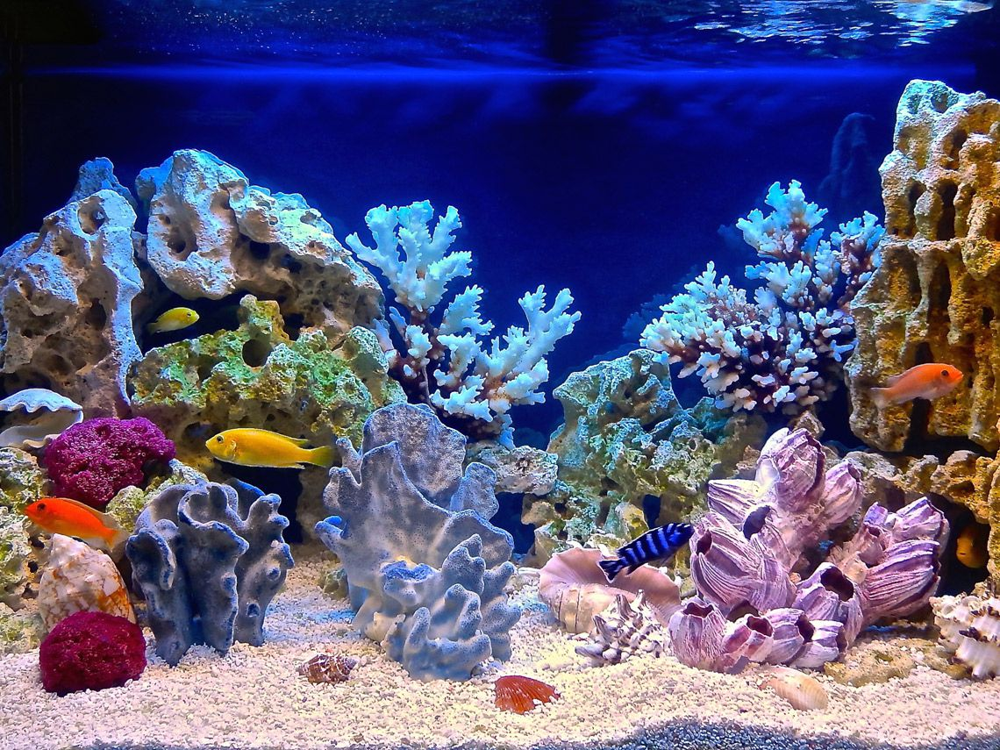
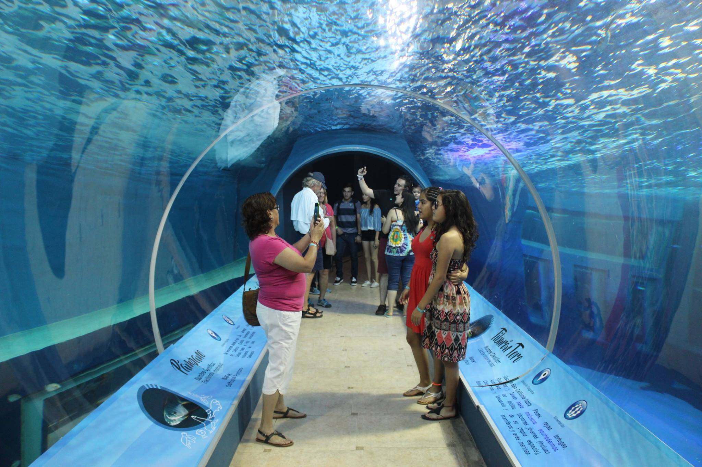

¡Bienvenidos!
Acuario Flipper Les da la más cordial bienvenida a este sitio donde además de presentarnos, te ofrecemos información del maravilloso mundo acuático, así como las variedades de peces y accesorios que manejamos en nuestra empresa para venta al menudeo y al mayoreo.
Somos una institucion que se encarga de la conservacion y cuidado de multiples especies de peces de agua dulce y salada desde 1993. En nuestros años de experiencia nos hemos dado cuenta de la importancia que tienen los usuarios de las sucursales por lo cual nos hemos empeñado en ser uno de los estandares en servico al cliente en Mexico. Flipper Morelia fue fundado en 1993 por Yoseline Rodriguez y es uno de los acuarios mas visitados a nivel nacional. En 2005 se funda Flipper Tlaxcala y en 2013 se funda Flipper Guadalajara. |  |
|---|---|
|  | A lo largo de nuestros 30 años de existencia nos hemos empeñado en tener instalaciones de primer mundo para que tanto los usuarios como los animales que se conservan tengan la mejor calidad de vida posible. |
Todos los derechos reservados © 2022 Jorge Mendieta / Acuario Flipper